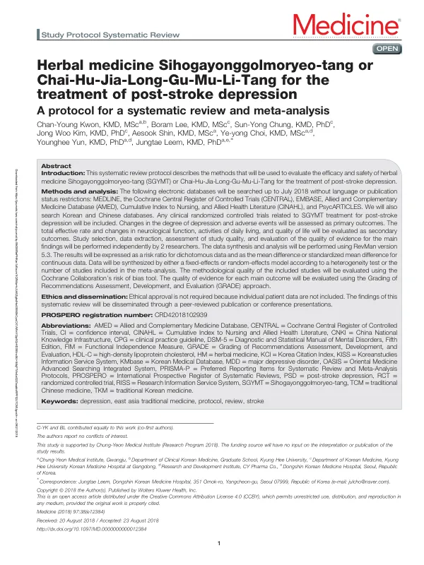

Herbal medicine Sihogayonggolmoryeo-tang or Chai-Hu-Jia-Long-Gu-Mu-Li-Tang for the treatment of post-stroke depression
Kwon CY, Lee B, Chung SY, Kim JW, Shin A, Choi Yy, Yun Y, Leem J
Medicine 97(38):e12384

첫 장 · 오픈액세스First page · open access
논문 소개Summary
이 논문은 뇌졸중 후 우울에 쓰는 시호가용골모려탕의 효과와 안전성을 평가하려는 체계적 문헌고찰의 프로토콜입니다. 무엇을 어떻게 찾고 어떤 기준으로 판단할지를 고찰에 앞서 공개해 두는 글입니다.
검색은 2018년 7월까지, 언어와 출판 상태를 제한하지 않고 진행합니다. 메드라인과 코크란 중앙등록부, 엠베이스, 보완대체의학 데이터베이스, 간호·보건 데이터베이스, 심리학 문헌 데이터베이스를 훑고 한국어와 중국어 데이터베이스도 함께 봅니다. 대상은 이 처방을 쓴 무작위 대조시험입니다.
일차 결과를 우울 정도의 변화와 이상반응 둘로 잡은 점이 눈에 띕니다. 효과와 안전성을 같은 무게로 앞에 둔 것입니다. 총유효율과 신경학적 기능, 일상생활 수행, 삶의 질은 이차로 미룹니다. 총유효율은 이 분야 연구에서 흔히 주된 결과로 쓰이지만 무엇이 얼마나 좋아졌는지를 알려 주지 않는 지표이므로 뒤로 보낸 것입니다.
두 연구자가 각각 문헌 선정과 자료 추출, 질 평가, 근거 수준 평가를 하고 결과는 이분형이면 위험비로, 연속형이면 평균차나 표준화 평균차로 냅니다. 이질성 검정과 포함된 연구 수에 따라 고정효과 또는 랜덤효과 모형을 고릅니다. 방법론적 질은 코크란 비뚤림 위험 평가도구로, 근거 수준은 GRADE 접근법으로 평가합니다.
프로토콜이므로 결과는 없고 개별 환자 자료를 쓰지 않으므로 윤리 승인도 필요하지 않습니다. 이 계획은 실제로 수행되어 무작위 대조시험 21편과 참여자 1,644명을 담은 고찰로 이어졌습니다. 그 결론은 초기 8주에 나타난 차이가 이후 사라졌고 근거의 수준이 낮다는 것이었습니다. 미리 GRADE 평가를 계획에 넣어 두었기 때문에 나올 수 있었던 결론입니다.
This paper is the protocol for a systematic review evaluating the efficacy and safety of Sihogayonggolmoryeo-tang for post-stroke depression — a document declaring in advance what will be searched, how, and by what standards it will be judged.
Searching runs to July 2018 without restriction on language or publication status, covering MEDLINE, the Cochrane Central Register of Controlled Trials, EMBASE, AMED, CINAHL and PsycARTICLES, together with Korean and Chinese databases. Eligible studies are randomised controlled trials of this formula.
Notably, the primary outcomes are two: change in the degree of depression, and adverse events. Efficacy and safety are placed at the front with equal weight. The total effective rate, neurological function, activities of daily living and quality of life are deferred to secondary status — the total effective rate being an outcome commonly used as primary in this field, yet one that says nothing about what improved or by how much.
Two researchers independently perform study selection, data extraction, quality assessment and evaluation of the certainty of evidence. Results are expressed as risk ratios for dichotomous data and as mean or standardised mean differences for continuous data, with fixed- or random-effects models chosen according to heterogeneity testing and the number of included studies. Methodological quality is assessed with the Cochrane risk of bias tool and certainty of evidence with GRADE.
Being a protocol, it reports no results, and no ethical approval is required since individual patient data are not used. The plan was carried out, producing a review of 21 randomised controlled trials with 1,644 participants. Its conclusion was that the difference seen in the first eight weeks disappeared thereafter, and that the certainty of the evidence was low — a conclusion reachable because GRADE assessment had been written into the plan from the start.
인용Cite
Kwon CY, Lee B, Chung SY, Kim JW, Shin A, Choi Yy, Yun Y, Leem J. Herbal medicine Sihogayonggolmoryeo-tang or Chai-Hu-Jia-Long-Gu-Mu-Li-Tang for the treatment of post-stroke depression. Medicine. 2018;97(38):e12384. doi:10.1097/MD.0000000000012384